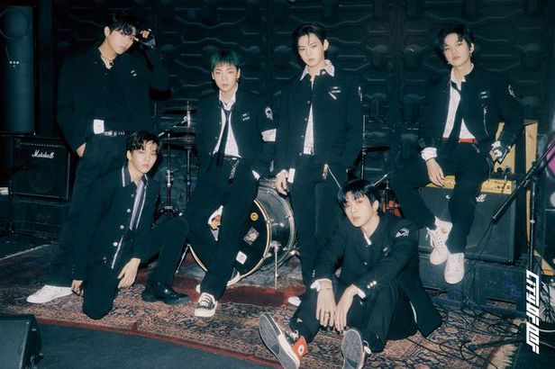

Description
ONF (pronounced as On and Off, Korean: 온앤오프) is a South Korean boy group formed
and managed by WM Entertainment. Originally debuting as a seven-piece group on August 3, 2017
with their EP, the group is now composed of six members: Hyojin, E-Tion, J-Us, Wyatt, MK and U.
The group's youngest member, Laun, left the group on August 23, 2019, shortly before the group's
fourth extended play Go Live.[3] Since their debut, ONF has since released a studio album,
a repackaged album, seven extended plays, and two Japanese singles following their Japanese
debut on August 1, 2018.